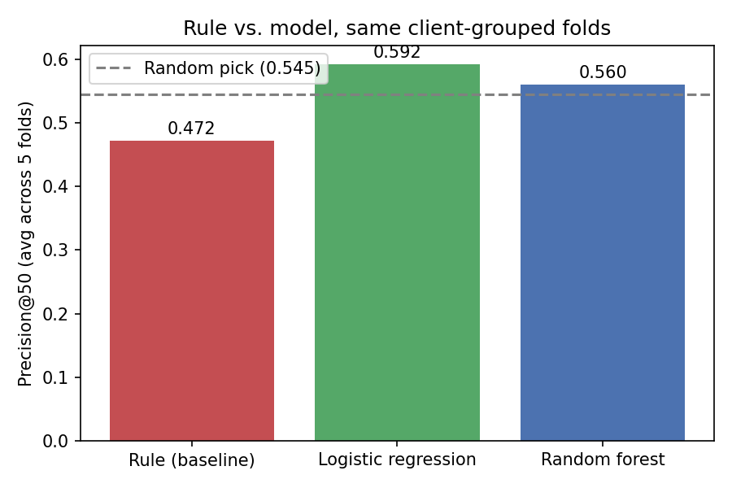
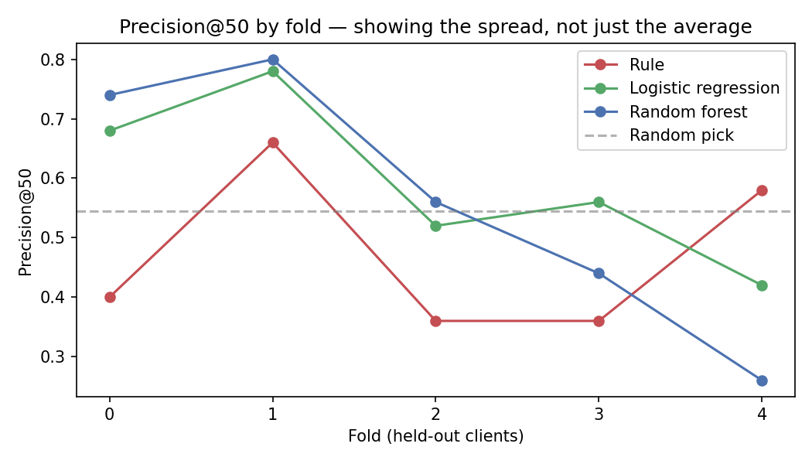
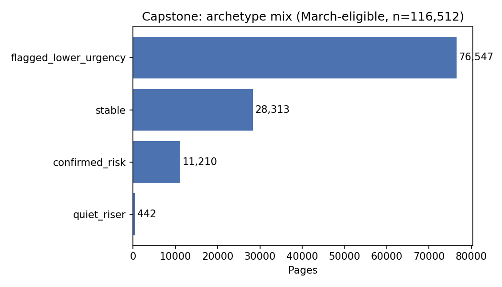

A validated comparison of a rule-based heuristic against logistic regression and random forest, scored on held-out clients.
Can page-level performance signals identify declining content pages better than a simple hand-written rule? Using FlyRank's March 2026 warehouse data, I built a rule-based baseline and two supervised models (logistic regression, random forest), validated with 5-fold client-grouped cross-validation to prevent leakage across clients. Under this honest split, the rule's top-ranked pages performed below a random pick (Precision@50 of 0.472 vs. a 0.545 base rate), while logistic regression reached 0.592 — a directional improvement, though one that varied widely by fold (0.42–0.78). The validated model now ranks the full 116,512-page population into a human-reviewed action queue, with monitoring checks that flag when the queue has gone stale. This is decision-support evidence from a single validated run, not a causal claim about what drives declines or a guarantee that refreshing a flagged page recovers its clicks.
GroupKFold on client_hash_id. See Methodology.Research question: among FlyRank's tracked content pages, can page-level performance signals — position, CTR, engagement, historical trend — identify which pages are declining and worth a refresh, better than a simple hand-written rule?
Decision this supports: prioritizing a content team's limited refresh capacity. Instead of reviewing pages in an arbitrary or purely recency-based order, a reviewer works down a ranked queue of snippet_fix, content_fix, and monitor actions, each with a stated reason.
The existing baseline — a Week 4 rule that flags pages on low CTR relative to position peers, or low engagement — is explainable but untested against an honest validation split. This paper asks whether a learned model, evaluated the right way, actually improves on it, and is explicit about where it doesn't.
Release: FlyRank/internship-warehouse (Hugging Face) — fact_content_daily_performance, joined with dim_content and dim_clients.
Window used: March 2026 daily performance, aggregated to one row per (client, page). April's click totals were pulled separately, used only to construct the outcome label.
331,437 pages were aggregated; 116,512 met the eligibility bar, and 28,805 of those (24.7%) could be labeled.
Eligibility filter: ≥50 GSC impressions OR ≥10 GA4 sessions. Pages below this threshold are too sparse to score reliably — a single visitor can swing an engagement rate from 0% to 100%.
Excluded: raw client and domain identifiers (only client_hash_id / content_hash_id used throughout); any page not meeting the eligibility filter.
decline_label = 1 if a page's April clicks fall below 80% of its March clicks. A page is labeled only if it is still tracked in April (all 116,512 eligible pages were) and had at least 5 March clicks, so the ratio isn't driven by noise in tiny counts. This left 28,805 labelable pages, at a 0.545 base rate.
All March-only, known before the decision point: gsc_impressions, gsc_clicks, gsc_avg_position, ga4_sessions, ga4_engaged_sessions, ctr, engagement_rate, peer_avg_ctr, plus position-bucket dummies.
The Week 4 hand-written rule: snippet_fix if CTR is below half the position-peer average, else content_fix if engagement rate is below 10% (minimum 10 sessions), else monitor. Its ranking score is the estimated clicks recoverable — a different scale for each branch, with an unvalidated weighting between them (discussed in Limitations).
Logistic regression (simple, inspectable) and random forest (can catch interactions), trained on the same features and label.
5-fold GroupKFold on client_hash_id — no client appears in both train and test, verified with a zero-overlap assertion on every fold. All three methods are scored on the identical folds. Primary metric is Precision@50 (of the top 50 ranked pages, what share actually declined), with @10 and @100 as side checks.
decline_label nor April clicks appear in the feature set.Why client-grouped, specificallyThis is a separate, earlier test — not part of this capstone's main result — but it's why the split above is non-negotiable. In a Week 6 audit of this same modeling approach, a random forest scored 0.90 Precision@10 under a naive random row split, and 0.58 once re-evaluated with
GroupKFoldon client. The same client's pages leaking across train and test inflates every metric; grouping by client is what makes the numbers in this paper mean what they claim to mean.
Disclosed caveat
gsc_clicksandctrare close relatives of the label — both are derived from March clicks. They're known before the decision point, so they're kept, but Results reports a sensitivity check on how much the model leans on them.
All three methods scored on the same 28,805 labeled pages, averaged across the 5 client-held-out folds:
| Method | P@10 | P@50 | P@100 |
|---|---|---|---|
| Rule (baseline) | 0.480 | 0.472 | 0.498 |
| Logistic regression | 0.580 | 0.592 | 0.574 |
| Random forest | 0.600 | 0.560 | 0.566 |
Precision@50 varies by fold — it is not a fixed quantity. Sample standard deviation across the 5 client-grouped folds: rule ±0.14, logistic regression ±0.14, random forest ±0.22. This is spread across client groups, not a confidence interval, and it's wide enough that "0.592" should be read as the center of a band, not a precise measurement.

Headline findingThe rule's top-ranked pages declined less often than a random pick (0.472 vs. 0.545). Under this honest split, the existing baseline does not beat chance at Precision@50.
Logistic regression beat the rule in 4 of 5 held-out-client folds, by about 12 points on average. Random forest also beat the rule in 4 of 5 folds but trailed logistic regression at P@50 and P@100, leading only at P@10. Logistic regression is the model carried forward to the ranked queue: it matched or beat the forest on the primary metrics and is easier to explain to a reviewer.
Standardized logistic regression coefficients, ranked by magnitude (positive pushes toward "declining"):
| Feature | Coefficient |
|---|---|
| gsc_clicks | −0.266 |
| gsc_avg_position | −0.191 |
| ga4_engaged_sessions | +0.119 |
| ctr | −0.102 |
| gsc_impressions | +0.081 |
| ga4_sessions | −0.081 |
The three strongest signals all point the same direction: more clicks, a better position, and a higher CTR each push a page away from the "declining" label. This isn't a new finding so much as the mechanism behind a caveat already raised in Limitations — smaller, lower-traffic pages have noisier click ratios, so they're more likely to cross the 80% decline threshold by chance alone, independent of anything actually changing about the page.
A result worth flagging rather than smoothing over: ga4_sessions is negative while the closely related ga4_engaged_sessions is positive. Two correlated session-count columns pointing in opposite directions is a collinearity symptom, not evidence that "engaged sessions specifically predict decline" — the model is splitting one real signal across two columns in a way that makes the individual signs unreliable. The ranking by magnitude is more trustworthy than any single coefficient's sign.
With matched random seeds on both runs, removing gsc_clicks and ctr changed random forest's Precision@50 from 0.560 to 0.556 — a negligible difference. In this run, the model does not appear to depend heavily on the two label-adjacent features.
Under a client-grouped split, the model shows a directional improvement over the rule. The size of that improvement varies a lot by fold — logistic regression's Precision@50 ranged from 0.42 to 0.78 across the 5 folds. With a single run per fold, this is decision-support evidence, not a precise performance estimate. See Limitations for the full spread.
What this work can and cannot claim:
Decision-support, not causationA high score means a page matches a pattern that preceded click declines in this data. It does not show that anything is broken on the page, or that refreshing it would recover clicks.
snippet_fix, a weighted session count for content_fix — with an arbitrary weighting between them. Part of "the model beat the rule" is that the rule's ranking was weak to begin with.gsc_clicks and ctr come from the same March clicks the label is built from — known before the decision point, but part of the signal may just restate "pages with few clicks can lose a large share of them."
Results vary a lot by foldOn the weakest fold, logistic regression scored 0.42 and random forest scored 0.26 — both below the rule's 0.58 on that same fold. A single average obscures this. Treat the headline numbers as a rough band, not a precise measurement.
The final model is fit once on all 28,805 labeled pages, then used to score the full 116,512-page March population. Every page gets two independent reads of its risk — the rule's reason code (a named problem: low CTR vs. peers, or low engagement) and the model's out-of-sample score. HIGH_RISK_CUTOFF (0.6084) marks the top 10% of this population's scores, recomputed fresh each cycle rather than hardcoded.
review_before_revert.investigate_quiet_risk.verify_then_review.monitor_only.
quiet_riser is small by construction — see below.quiet_riser is small by construction — the rule and model mostly agree, so the cases the model alone catches are rare. They're also the most interesting: the top-ranked page in this run (score 0.92) has 244,931 impressions and a 0.27% CTR, sitting at 11.6% engagement — just above the rule's 10% cutoff, which is why the rule missed it.
A reviewer with fixed weekly review capacity, deciding which pages to look at first — not deciding what change to make once they get there.
The no-go listThis playbook must never auto-edit, auto-revert, or auto-publish a content change. Every action name starts with a human verb on purpose — the queue tells a reviewer where to look; it does not act. The cutoff must never be hardcoded from a past run.
Two checks, so the queue can tell you when it's gone stale, run here on Feb vs. March as a demonstration:
| Check | Feb | March | Shift |
|---|---|---|---|
| Eligible pages | 93,871 | 116,512 | +24.1% |
| Decline base rate (vs. following month) | 0.313 | 0.545 | +0.232 |
Against a proposed ±0.15 alarm threshold on base-rate shift, this cycle's alarm would have fired. The action-mix also shifted toward content_fix (+6.3 points) and away from monitor (−5.0 points) — a signal visible before any outcome data was knowable.
Every number, table, and figure in this paper traces back to one notebook, run top to bottom — there's no separate result-to-notebook map to give, because there's only the one run.
Seeds: random_state=0 for both the final deployed model and every cross-validation fold. Environment: Python 3, scikit-learn, pandas, DuckDB, run in Google Colab. Data access: FlyRank/internship-warehouse on Hugging Face, read via a gated token.
Built on the FlyRank ML Internship dataset. Prepared as the capstone for FlyRank's ML Internship, Lane 2 (Refresh / Content Opportunity Scoring).